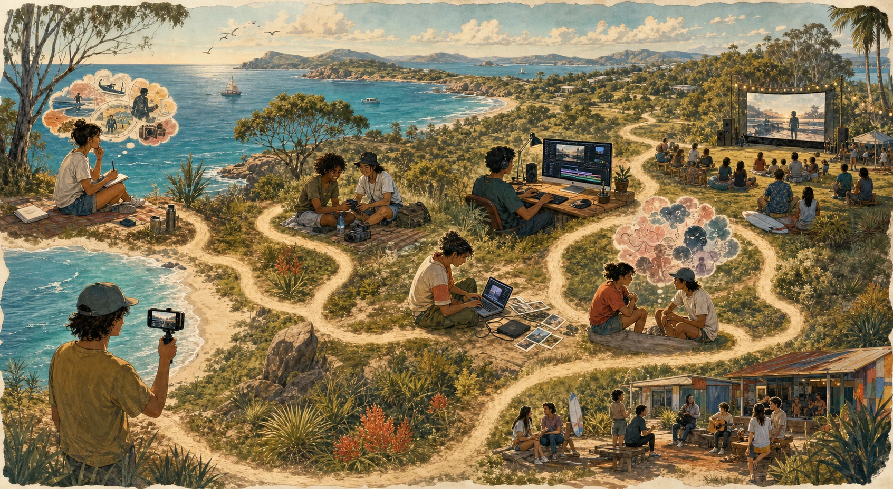

Make
Follow the idea, person, place, sound or question that keeps pulling you back.
This is a terrain map, not a mandatory route. Wander, double back, skip things and use only the tools that help you make the film.
Film Terrain Map
You might begin with a person, a joke, an image, an argument, a place, a phone full of clips or a half-finished edit. The paths can branch, loop or disappear.

Follow the idea, person, place, sound or question that keeps pulling you back.
Use the phone or camera you have. Try things. Miss things. Get another angle if you feel like it.
Try not to lose the only copy. Give mystery clips enough of a name or note that future-you can find them.
Cut, remix, storyboard, use AI, change direction and see what the material wants to become.
Private stories, borrowed material, uncertain claims or cultural material may deserve another thought. You decide what the project needs.
Send it to a friend, screen it locally, post it, enter something or keep it private. Different destinations have different conditions.
Optional Tools
Capture the spark, why it matters, who is involved, and what stays private.
Describe people, groups, places, and objects with care before filming.
Turn the idea into scenes without locking the story too early.
Map what can be used together, who stewards it, and what stays private.
Novice Friendly
You do not need a production bureaucracy to make something worthwhile. A few breadcrumbs can still help you find the good clip, remember where something came from or avoid sharing what you meant to keep close.